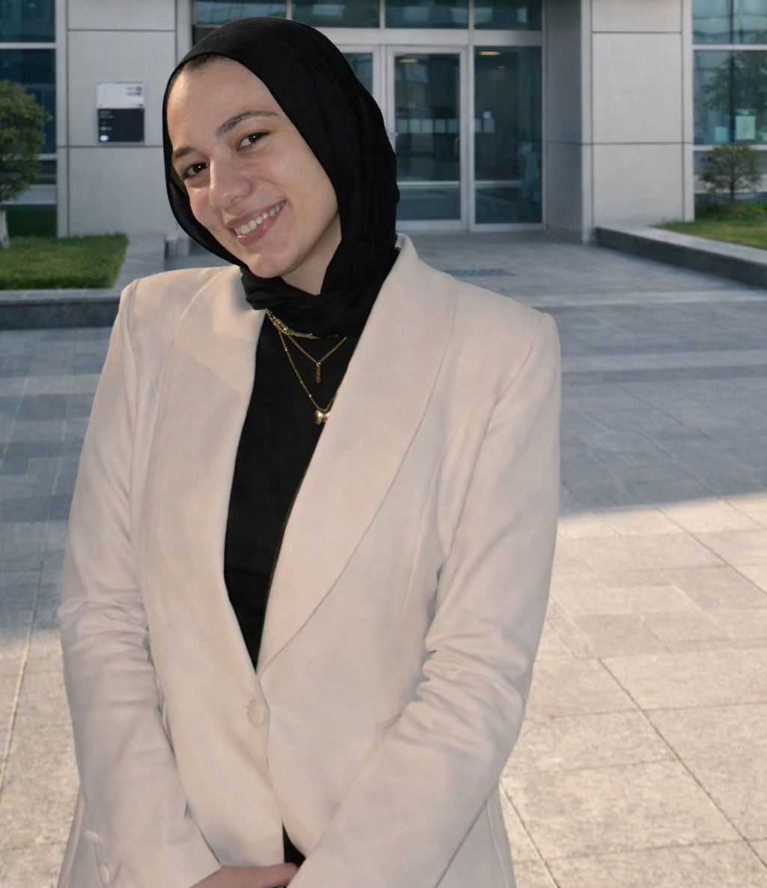

We build intelligent, reliable communication for IoT and IoV environments — combining lightweight machine learning, compact language models, and semantic reasoning to keep networks healthy at the edge.
The Research Group has been established to foster the development of promising research ideas and deliver innovative, applicable research solutions. Our work centers on Internet of Things (IoT) and Internet of Vehicles (IoV) environments, with particular emphasis on assessing and maintaining the health and reliability of communication links across heterogeneous network infrastructures.
We address both centralized and decentralized system architectures — pursuing efficient, reliable, and intelligent communication delivery under dynamic, resource-constrained conditions.
Read the full mission →Our interests span the full stack — from how a model reasons about a link, down to whether that model can run at the edge.
See all research directions →Centralized and decentralized system designs for Internet of Things and Internet of Vehicles environments.
Applying machine learning to monitor, predict, and optimize communication link health.
Using large language models to generate human-like reasoning over network state and behavior.
tinyML and tinyLLM techniques designed to run within real IoT hardware constraints.
Our current flagship track puts four graph-learning architectures head-to-head inside TwinNet, the leading open-source network digital twin.
A comparative study benchmarking Message-Passing GNNs, Graph Attention Networks, Graph Transformers, and Graph Mamba (state-space models) as drop-in replacements for TwinNet's backbone — measuring accuracy, generalization, and real-time inference cost.
Models under comparison
Faculty leadership, research assistants, and graduate researchers working across IoT intelligence and network digital twins.
Assistant Professor of Computer Engineering, UAE University. Founded and heads INet Lab, hosted at Alexandria University, setting strategic research direction and leading funded projects.

American University in Cairo. Supports research design, methodology development, technical writing, and system architecture formulation.
B.Sc. Computer Science, E‑JUST. Research Assistant & Lab Coordinator, leading the Digital Twin research track.
Opportunities may be open for undergraduate researchers, M.Sc./Ph.D. candidates, and research collaborators — depending on availability and funding.